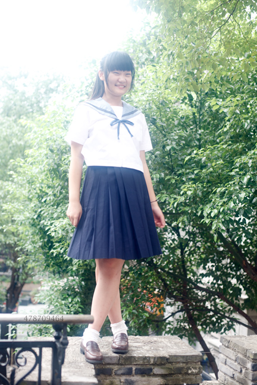
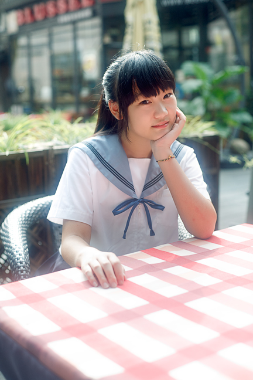
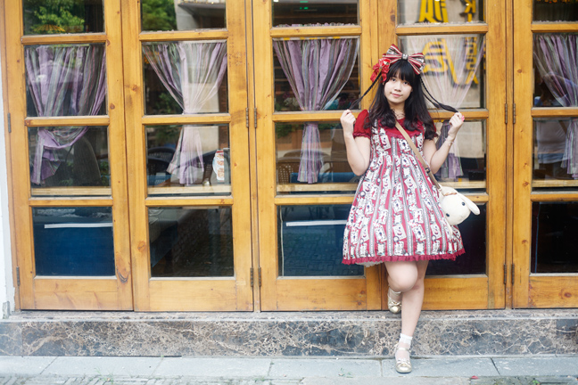
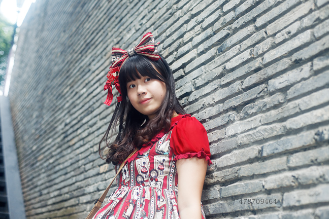

那天我赶到阳春巷的时候，另外两位摄影师已经拍得告一段落了。正与模特们坐在河边闲聊。
太阳淡淡的照射下来，感觉光硬度正适合，虽然还是夏天，但倒也不算闷热。
最近我看过一本叫“荒木经惟的天才写真术”的书，对书中所说的拍摄时要讲究时间的流动性很有感触，时间的流动就是不刻意不造假，在景物最自然的瞬间突然用相机切断时间流，这就是所谓的“拍摄时机”了。
但拍摄时机说来简单，真要操作也颇费思量。就象今天的人像拍摄，该怎样才能让模特放松，该如何抓拍，相机如何操作才能随时与意念保持同步？
这是在那天的拍摄之前我曾想过的一些问题，但另一面，一旦真正进入拍摄，最好的办法就是将脑中保持一片空白，让拍摄过程尽可能轻松。其实什么都不重要，只要跟着自己的感觉走就好，只有这一段段的拍摄过程，这些一起度过的时间才是最真实温暖的。
阳春巷人像速拍，已匆匆而过，留下的只有这些照片了。
（模特：糯米，醉蓝）
图片



